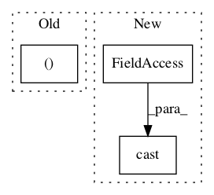

2a64a9d6d97a5c203bd58c0d039eb7e63c07e80f,snntoolbox/simulation/backends/inisim/ttfs.py,SpikeMaxPooling2D,call,#SpikeMaxPooling2D#Any#Any#,502

Before Change
if self.spiketrain is not None:
new_spikes = tf.math.logical_xor(
k.greater(input_psp, 0), k.greater(self.last_spiketimes, 0))
self.add_update([(self.spiketrain,
self.time * k.cast(new_spikes, k.floatx()))])
psp = self.get_psp(input_psp)
After Change
psp = self.get_psp(input_psp)
return tf.cast(psp, self._floatx)
custom_layers = {"SpikeFlatten": SpikeFlatten,
"SpikeDense": SpikeDense,
In pattern: SUPERPATTERN
Frequency: 4
Non-data size: 3
Instances
Project Name: NeuromorphicProcessorProject/snn_toolbox
Commit Name: 2a64a9d6d97a5c203bd58c0d039eb7e63c07e80f
Time:
Author: null
File Name: snntoolbox/simulation/backends/inisim/ttfs.py
Class Name: SpikeMaxPooling2D
Method Name: call
Project Name: NeuromorphicProcessorProject/snn_toolbox
Commit Name: 2a64a9d6d97a5c203bd58c0d039eb7e63c07e80f
Time:
Author: null
File Name: snntoolbox/simulation/backends/inisim/ttfs.py
Class Name: SpikeLayer
Method Name: update_neurons
Project Name: tensorflow/models
Commit Name: b95fa6e1a7081cadc959de85629b10ef930ab30f
Time:
Author: null
File Name: official/nlp/modeling/models/xlnet.py
Class Name: XLNetClassifier
Method Name: call
Project Name: dpressel/mead-baseline
Commit Name: f41500f48d5087f531a48059ea0a5339591763ea
Time:
Author: null
File Name: python/eight_mile/tf/layers.py
Class Name: BeamSearchBase
Method Name: __call__